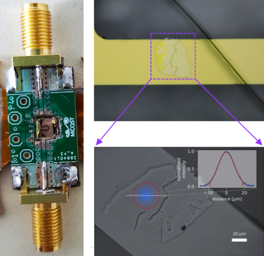

All-dimensional spin defect discovery
Our focus is to explore novel spin defects in solid-state materials and to develop new methods for the systematic screening and identification of promising host systems. By combining optical and microwave spectroscopy with wide-field microscopy, we aim to establish scalable approaches to reveal, understand, and engineer spin and optical properties down to the single-defect level. Our long-term goal is to enable robust solid-state quantum technologies that operate under realistic conditions and can be applied across disciplines, from materials science to biology.